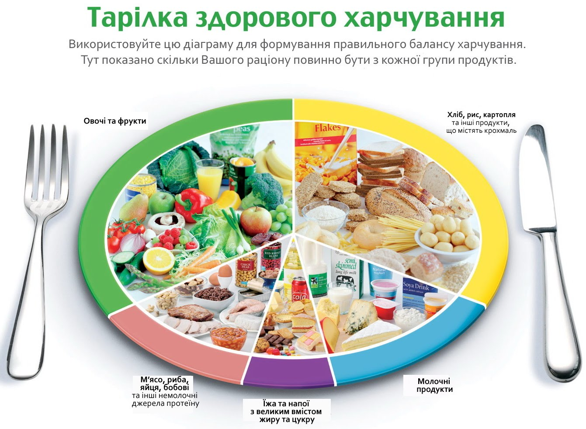
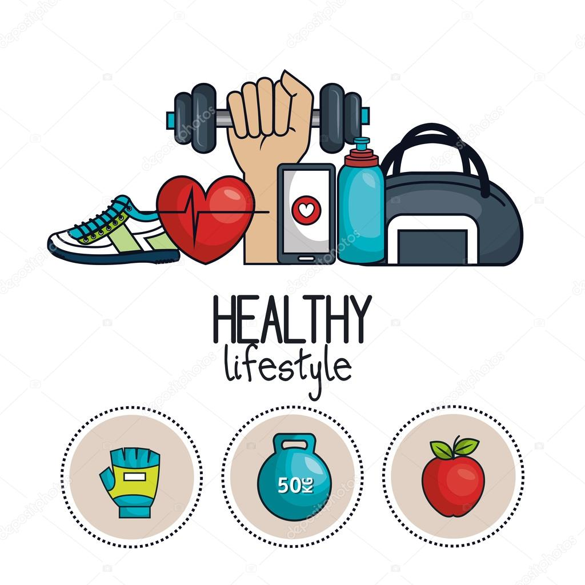
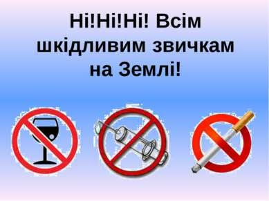
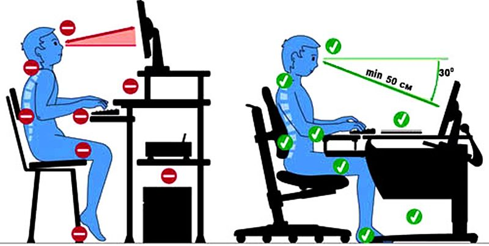

правило № 1

Найважливіше при здоровому способі життя - це харчування. Можна і потрібно вживати тільки натуральні продукти. До них в список варто віднести овочі, фрукти, горіхи, ягоди, рибу, м’ясо, молочні продукти і морепродукти, яйця. До мінімуму необхідно звести вживання штучних продуктів, напівфабрикатів, натуральних продуктів, що містять хімічні добавки. До таких продуктів-табу відносять: газовані напої, синтетичні соки, сирки і йогурти хімічного виробництва, деякі м’ясні вироби, приправи і майонез. Особливо шкідливою їжею вважаються бульйонні кубики, фастфуд, готові сніданки, солодке, борошняне і багато іншого.
правило № 2

Заняття спортом вводьте поступово. Якщо ваш організм вже «забув», що таке фізкультура, то надмірні фізичні навантаження відразу можуть тільки нашкодити.
Особливо важливий рух для дітей. Дитячий організм потребує 90 хвилинах фізичної активності щодня. Як мінімум 30 хвилин в день треба присвячувати аеробним вправам. Найкраще прищеплювати їм звичку здорового способу життя на власному прикладі. Пам'ятайте, що ожиріння є найбільш серйозною загрозою для здоров'я сучасних дітей та молоді.
Будьте активними, життєрадісними і відкритими до світу. В умовах постійної зайнятості важко знайти час на походи в спортзал, заняття спортом ... А даремно!
І все-таки, навіть якщо на спорт часу немає, то піші прогулянки на свіжому повітрі, ранкову пробіжку, зарядки вранці ніхто не відміняв. Ходіть більше пішки, гуляйте у парках та лісах, будьте рухливими.
Від серцево-судинних та інших серйозних захворювань потрібно йти або навіть тікати. У прямому сенсі слова. Рухайтеся назустріч міцному здоров'ю і довголіттю!
правило № 3

Здоровий спосіб життя жодним чином не сумісний з шкідливими звичками: куріння, вживання алкоголю і тим більше наркоманія. І якщо алкоголь по святах при здоровому способі життя ще можна зрозуміти, то куріння і наркоманія скасовуються повністю.
правило № 4

Працюючи за комп'ютером, сидите прямо, тримайте правильну поставу, робіть перерви і періодично вставайте, щоб розім'ятися.
Шлях до здорового способу життя лежить від самої людини, від її розуміння світу, тому вибір свого життя (здоровим воно буде чи ні), так само, як і відповідальність за свій вибір залежить лише від нас. Пам’ятайте: Краще вже бігати на свіжому повітрі, ніж по лікарях!